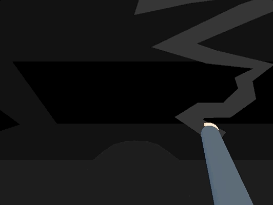

Dominik Cigarette

Overview
This is a project I made with a university classmate for the "No Art" game jam on itch.io. The jam lasted for two weeks, but we worked on the game for three full days only. The "no art" theme meant it was a jam perfect for programmers with no artistic skills, or anyone who wanted the severe handicap of trying to make a game using only primitives in-engine, shaders, and similar tools.
The premise of the game is an exhausted worker going back home in his crappy car with no headlights. You've got to get back home safely without ditching it.
With that, we went for a blind drive game where the player has to listen to the sound of the surface. Gravel on the sides signals being dangerously close to the ditches on the side of the road. The sound was spatial, which helps determine the side of the road.
Role and Contributions
No-Artist, Game Designer, and Level Designer. We didn't assign any distinct roles, but during development they became more apparent as I focused on building the level out in Unity, while my teammate focused more on programming, UI, and sound design.
In the end I built out the whole track of around 3-4 minutes in length and figured out the challenge of playing the spatially panned gravel sound for the left and right sides. I also built the car and a house from primitives.
An additional mechanic that we didn't have time for was about the titular cigarette: the player character would have to light it up again whenever the coughing in the background became more intense.
Engine and Tools
Unity, Github.